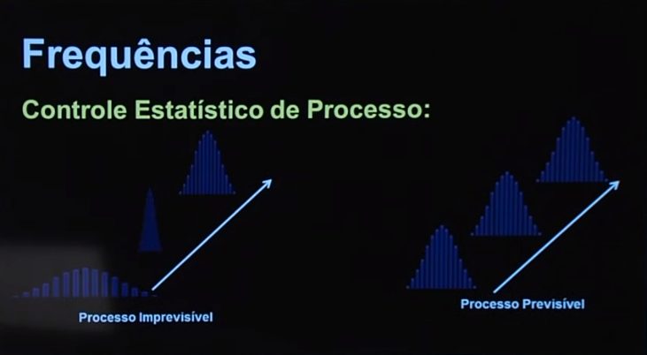
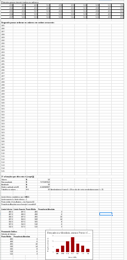

Disciplinas
-
Estatística e Probabilidade Concluído
Materiais
- Estatística - Aula 14 - Exercícios - Distribuição de frequências
-
Professor ministrante: André Fleury (Univesp)
Conteúdo
Exercícios Distribuição de frequência
Exercício Comentado Controle Estatístico de Processo:Ferramenta da qualidade com foco no controle dos processos produtivos (Produtos e serviços)
Fornece informações para diagnóstico na prevenção e detecção de defeitos e problemas.
Evita desperdícios de matéria-prima, de insumos, de produtos.
Viabiliza o aprimoramento contínuo (PDCA)
Auxilia no aumento da produtividade.
Melhora os resultados da empresa.
Altura das peças produzidas (mm):
| 212 | 213 | 198 | 216 | 219 | 204 | 220 | 216 |
|---|---|---|---|---|---|---|---|
| 214 | 215 | 209 | 225 | 205 | 213 | 221 | 222 |
| 220 | 207 | 226 | 207 | 207 | 215 | 208 | 208 |
| 210 | 208 | 213 | 215 | 214 | 228 | 200 | 218 |
| 216 | 219 | 202 | 220 | 222 | 215 | 212 | 214 |
Pede-se:
- classes.
- frequência absoluta.
- frequência relativa.
- frequência acumulada.
- frequência relativa acumulada.
- ponto médio das classes.
Reordenando...
| 198 | 207 | 208 | 213 | 214 | 216 | 219 | 222 |
| 200 | 207 | 209 | 213 | 215 | 216 | 220 | 222 |
| 202 | 207 | 210 | 213 | 215 | 216 | 220 | 225 |
| 204 | 208 | 212 | 214 | 215 | 218 | 220 | 226 |
| 205 | 208 | 212 | 214 | 215 | 219 | 221 | 228 |
Frequências
- N = 40, é a quantidade de elementos da tabela à cima.
- K = √N
- K = √40
- K = 6,32
- H = A/K = 30/6,32 ≅ 4,74
- H = 4,74 → H = 5
- K = 6,32 → K = 7
- A = 30 e 7.5 = 35 OK
| Classes | Frequência Absoluta |
|---|---|
| 195,5 → 200,5 | 2 |
| 200,5 → 205,5 | 3 |
| 205,5 → 210,5 | 8 |
| 210,5 → 215,5 | 12 |
| 215,5 → 220,5 | 9 |
| 220,5 → 225,5 | 4 |
| 225,5 → 230,5 | 2 |
| Total | 40 |
Explicação:
| Classes | Frequência Absoluta |
|---|---|
| 195,5 → 200,5 ... Entre esses valores eu terei → | 2 valores |
| 200,5 → 205,5 ... Entre esses valores eu terei → | 3 valores |
| 205,5 → 210,5 ... Entre esses valores eu terei → | 8 valores |
| 210,5 → 215,5 ... Entre esses valores eu terei → | 12 valores |
| 215,5 → 220,5 ... Entre esses valores eu terei → | 9 valores |
| 220,5 → 225,5 ... Entre esses valores eu terei → | 4 valores |
| 225,5 → 230,5 ... Entre esses valores eu terei → | 2 valores |
| Total | 40 valores |
| 198 | 207 | 208 | 213 | 214 | 216 | 219 | 222 |
|---|---|---|---|---|---|---|---|
| 200 | 207 | 209 | 213 | 215 | 216 | 220 | 222 |
| 202 | 207 | 210 | 213 | 215 | 216 | 220 | 225 |
| 204 | 208 | 212 | 214 | 215 | 218 | 220 | 226 |
| 205 | 208 | 212 | 214 | 215 | 219 | 221 | 228 |
Na Frequência Acumulada, somamos o valor anterior com o valor da próxima classe.
- Ex: repete o 2 e soma com 3 que retorna 5 ...
Na Frequência Relativa, dividimos o numero de elementos da classe pelo numero total de elementos.
- Ex: 2/40 = 0,05 * 100 = 5 ...
Na Frequência Relativa Acumulada, somamos o valor percentual anterior com o valor da próxima classe..
- Ex: repete o 5,0 e soma com 7,50 que retorna 12,50 ...
No Ponto Médio, somamos os dois valores e dividimos por 2
- Ex: 195,5 + 200,5 = 396/2 = 198 ...
| Classes | Frequência Absoluta | Frequência Relativa (%) | Frequência Acumulada | Frequência Relativa Acumulada | Ponto Médio |
|---|---|---|---|---|---|
| 195,5 → 200,5 | 2 | 5,00 | 2 | 5,0 | 198 |
| 200,5 → 205,5 | 3 | 7,50 | 5 | 12,50 | 203 |
| 205,5 → 210,5 | 8 | 20,00 | 13 | 32,50 | 208 |
| 210,5 → 215,5 | 12 | 30,00 | 25 | 62,50 | 213 |
| 215,5 → 220,5 | 9 | 22,50 | 34 | 85,00 | 218 |
| 220,5 → 225,5 | 4 | 10,00 | 38 | 95,00 | 223 |
| 225,5 → 230,5 | 2 | 5,00 | 40 | 100,00 | 228 |
| Total | 40 | 100,00 | - | - |
Processo de envasamento de água mineral.
Volume esperado: 500ml.
50 amostras selecionadas (amostragem sistemática)
Volumes:
| 493 | 497 | 485 | 512 | 498 | 495 | 506 | 500 | 505 | 511 |
| 494 | 498 | 491 | 488 | 497 | 492 | 513 | 499 | 487 | 502 |
| 495 | 499 | 507 | 503 | 489 | 503 | 512 | 490 | 495 | 503 |
| 496 | 500 | 505 | 501 | 502 | 508 | 509 | 496 | 486 | 500 |
| 497 | 501 | 503 | 502 | 501 | 514 | 510 | 515 | 490 | 499 |
Volumes reordenados:
| 485 | 490 | 494 | 496 | 498 | 500 | 502 | 503 | 507 | 512 |
|---|---|---|---|---|---|---|---|---|---|
| 486 | 490 | 495 | 497 | 499 | 500 | 502 | 503 | 508 | 512 |
| 487 | 491 | 495 | 497 | 499 | 501 | 502 | 505 | 509 | 513 |
| 488 | 492 | 495 | 497 | 499 | 501 | 503 | 505 | 510 | 514 |
| 489 | 493 | 496 | 498 | 500 | 501 | 503 | 506 | 511 | 515 |
- N = 50
- K = √N
- K = √50
- K = 7,07
Amplitude - é a diferença entre o maior valor e o menor valor (485 e 515)
- H = A/K = 30/7 ≅ 4,3
- H = 4,3 → H = 4
- K = 7,07 → K = 7
- A = 30 e 7·4 = 28 X, o valor não bate, então teremos que arredondar H para cima.
- H = 4,3 → H = 5
- K = 7,07 → K = 7
- A = 30 e 7·5 = 35 OK
| Classes | Frequência Absoluta |
|---|---|
| 482,5 → 487,5 | 3 |
| 487,5 → 492,5 | 6 |
| 492,5 → 497,5 | 10 |
| 497,5 → 502,5 | 14 |
| 502,5 → 507,5 | 8 |
| 507,5 → 512,5 | 6 |
| 512,5 → 517,5 | 3 |
| Total | 50 |
Ponto Médio
- Soma os 2 valores (482,5 + 487,5 = 970)
- Divide por 2 (970 / 2 = 485)... e assim por diante.
| Classes | Frequência Absoluta | Ponto Médio |
|---|---|---|
| 482,5 → 487,5 | 3 | 485 |
| 487,5 → 492,5 | 6 | 490 |
| 492,5 → 497,5 | 10 | 495 |
| 497,5 → 502,5 | 14 | 500 |
| 502,5 → 507,5 | 8 | 505 |
| 507,5 → 512,5 | 6 | 510 |
| 512,5 → 517,5 | 3 | 515 |
| Total | 50 |
Vamos resolver o mesmo exercício utilizando o Google Docs:
Aqui! 